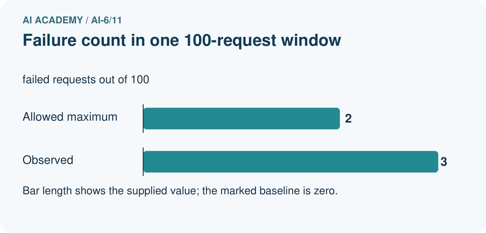
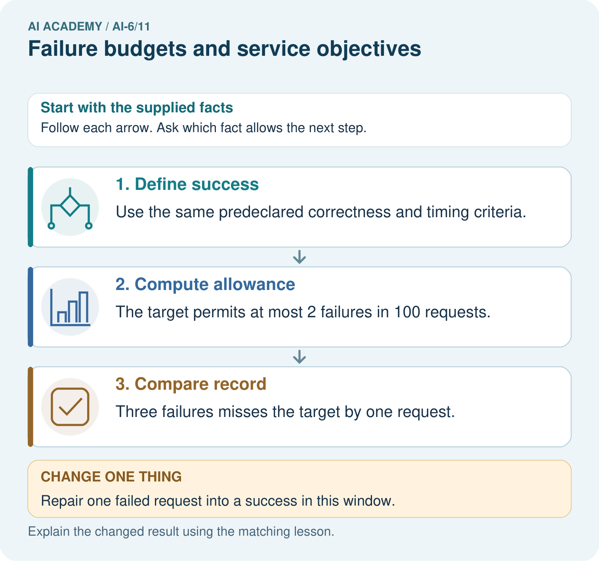
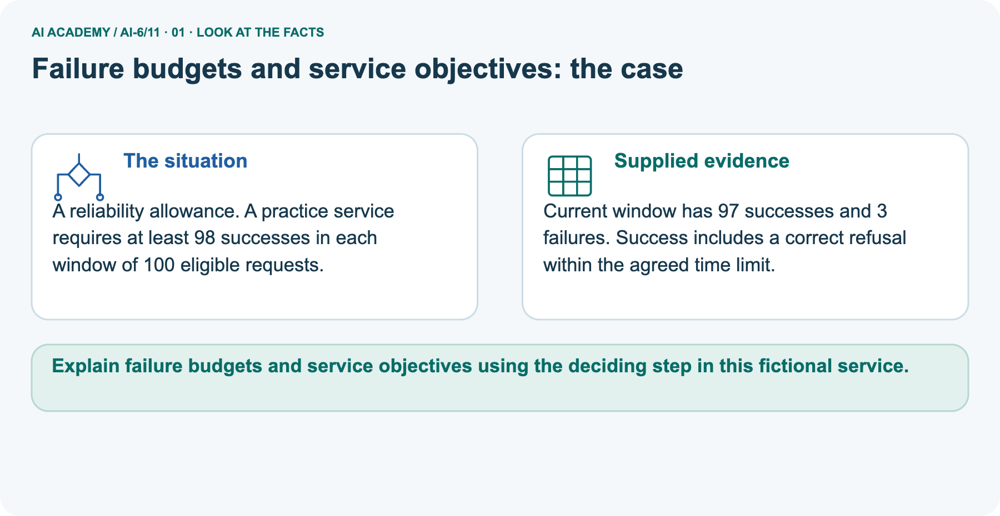
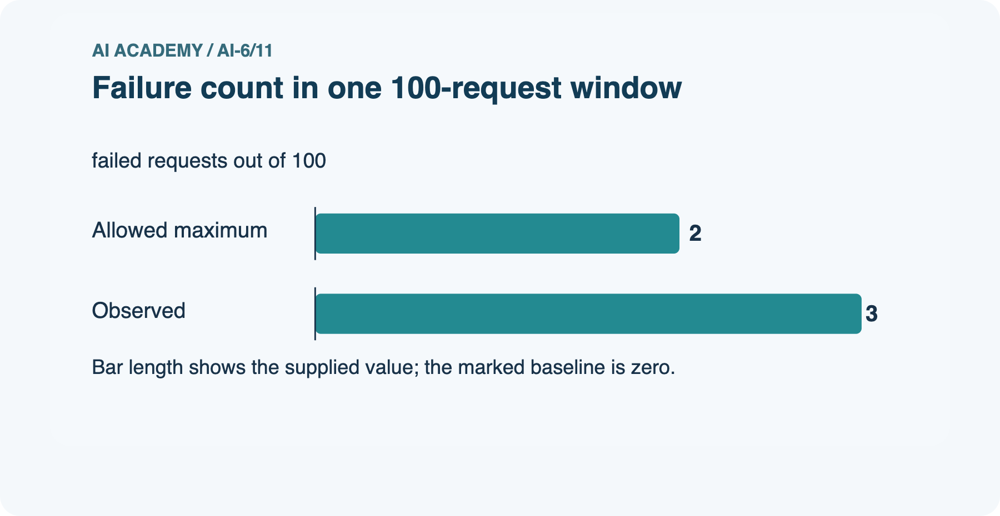
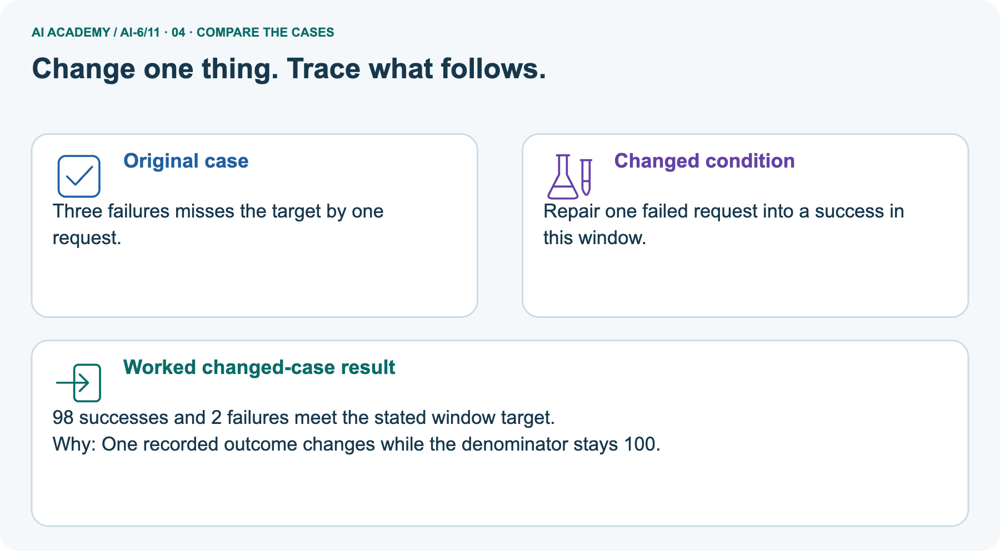
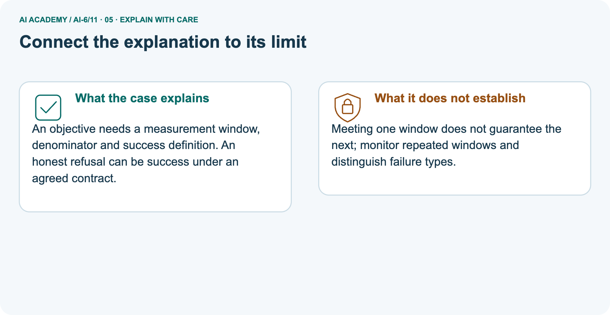
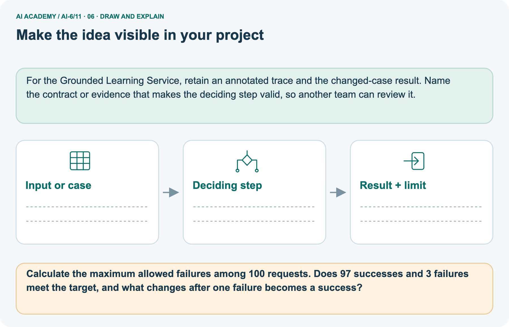

AI Academy · Level 6 · Grade 11 · Week 11 · Workbook
Failure budgets and service objectives
Learn to understand, design, build, test and explain AI systems responsibly.
Project: Grounded Learning Service
THE CONNECTED WEEK
One complete service-objective and failure-budget record.
Keep interval identity,eligibility,success rules,failed IDs,exclusions and exact budget arithmetic together.
Keep one habit: Recall → W1–W3/W5 → independent objective → project interval report → delayed return.
Main lesson · Section 1
Recall · Retrieve before notes
Keep this task’s inputs,rule and response together.
Complete task and evidence
Try the recall before opening notes. Then use a different colour or a labelled second line to correct your explanation.
Without opening the old lesson, explain one key idea from Evaluation pipelines. Give an example and a mistake that the idea helps you avoid.
Without opening the old lesson, explain one key idea from Testing model-dependent behaviour. Give an example and a mistake that the idea helps you avoid.
Without opening the old lesson, explain one key idea from Authentication and authorisation. Give an example and a mistake that the idea helps you avoid.
Use this reference for the original W1–W3 and W5 exercises. The separately named independent case supplies its own changed facts; use those facts for that attempt before feedback.
Service objectives define measured reliability over a stated interval. A failure budget is meaningful only after success and eligible requests are defined.
For a fictional objective at least 98% of 200 eligible requests must pass all contract checks. Allowed failures are 2%*200=4. Count every eligible failure once; report excluded requests separately.
Evaluation pipelines
Testing model-dependent behaviour
Authentication and authorisation
Lesson reference for workbook practice
Main lesson · Section 5
W1 · Explain the current example
Keep this task’s inputs,rule and response together.
Complete task and evidence
Main constructed W-A window:200 eligible user requests, 3 internal health checks excluded by predeclared policy. Success requires all supplied schema, support-or-correct-refusal and timing flags.5 requests fail though 7 individual checks fail; count each request once. Success195/200=97.5%. Target≥98% allows at most 4 failures; 5 exceeds by1, so this window misses.
Correct refusal can be success under the declared contract. Exact integer maximum is floor((100−target_percent)×eligible/100); 98% over 12 allows0 failures. Separate picture original 100 requests has 97 success/3 fail, allowance 2, misses by1. A counterfactual copy 98/2 meets at equality; preserve original 97/3. A real retry does not silently erase a previous failed request.
Zero eligible denominator has no empirical rate. Synthetic records do not establish actual timing, live reliability, zero critical incidents or future performance.
Explain the weekly mechanism in your own words. Use the worked scenario to name its input, decision rule and output.
Main lesson · Section 6
W2 · Trace the calculation
Keep this task’s inputs,rule and response together.
Complete task and evidence
Main constructed W-A window:200 eligible user requests, 3 internal health checks excluded by predeclared policy. Success requires all supplied schema, support-or-correct-refusal and timing flags.5 requests fail though 7 individual checks fail; count each request once. Success195/200=97.5%. Target≥98% allows at most 4 failures; 5 exceeds by1, so this window misses.
Correct refusal can be success under the declared contract. Exact integer maximum is floor((100−target_percent)×eligible/100); 98% over 12 allows0 failures. Separate picture original 100 requests has 97 success/3 fail, allowance 2, misses by1. A counterfactual copy 98/2 meets at equality; preserve original 97/3. A real retry does not silently erase a previous failed request.
Zero eligible denominator has no empirical rate. Synthetic records do not establish actual timing, live reliability, zero critical incidents or future performance.
In the interval 200 requests are eligible and 5 fail. Show the intermediate steps and give the conclusion with its scope.
Main lesson · Section 7
W3 · Repair a misconception
Keep this task’s inputs,rule and response together.
Complete task and evidence
Main constructed W-A window:200 eligible user requests, 3 internal health checks excluded by predeclared policy. Success requires all supplied schema, support-or-correct-refusal and timing flags.5 requests fail though 7 individual checks fail; count each request once. Success195/200=97.5%. Target≥98% allows at most 4 failures; 5 exceeds by1, so this window misses.
Correct refusal can be success under the declared contract. Exact integer maximum is floor((100−target_percent)×eligible/100); 98% over 12 allows0 failures. Separate picture original 100 requests has 97 success/3 fail, allowance 2, misses by1. A counterfactual copy 98/2 meets at equality; preserve original 97/3. A real retry does not silently erase a previous failed request.
Zero eligible denominator has no empirical rate. Synthetic records do not establish actual timing, live reliability, zero critical incidents or future performance.
A report omits this qualification: Meeting one interval objective does not establish every future interval or zero critical failures.
Explain how omitting it could change a reader's interpretation, and write an accurate replacement.
Main lesson · Section 9
W5 · Explain the limitation
Keep this task’s inputs,rule and response together.
Complete task and evidence
Main constructed W-A window:200 eligible user requests, 3 internal health checks excluded by predeclared policy. Success requires all supplied schema, support-or-correct-refusal and timing flags.5 requests fail though 7 individual checks fail; count each request once. Success195/200=97.5%. Target≥98% allows at most 4 failures; 5 exceeds by1, so this window misses.
Correct refusal can be success under the declared contract. Exact integer maximum is floor((100−target_percent)×eligible/100); 98% over 12 allows0 failures. Separate picture original 100 requests has 97 success/3 fail, allowance 2, misses by1. A counterfactual copy 98/2 meets at equality; preserve original 97/3. A real retry does not silently erase a previous failed request.
Zero eligible denominator has no empirical rate. Synthetic records do not establish actual timing, live reliability, zero critical incidents or future performance.
For the worked scenario, propose one additional case that could reveal a failure, describe its expected outcome before running it, and explain what would need to remain fixed for a fair comparison.
Do not reuse W4 as a new final test after receiving feedback.
Main lesson · Section 4
Try alone · Selected transfer
Keep this task’s inputs,rule and response together.
Complete task and evidence
Objective 95% over 80 eligible requests. Five fail. Compute allowed failures and observed success.
Attempt this case before feedback. Record any help. Earlier examples below are further practice; a case already practised with feedback cannot establish fresh transfer.
Independent case: Apply a new case independently
Main lesson · Section 10
Project · Keep the service evidence
Preserve the contract, inputs, observed outcomes and limits.
Complete task and evidence
Add a labelled failure budgets and service objectives evidence sheet to Grounded Learning Service. Show how you can explain the mechanism and terminology of failure budgets and service objectives.
Use the supplied fictional case and keep its inputs, intermediate steps, calculation or prediction, and limitation. Connect this record to last week’s record; a matching answer without a trace is insufficient.
Main lesson · Section 11
Feedback · Repair and return
Keep this task’s inputs,rule and response together.
Complete task and evidence
Revisit this idea with your teacher after a delay. Familiarity is different from explaining and using it on a changed case.
| Evidence | My record |
|---|---|
| Worked alone / hint / model | |
| First step I repaired and why | |
| New case checked later; date and result | |
| What I can now explain without notes | |
| One remaining question |
Reference bank and extra practice
Choose the reference that helps your next step.
Reference · Supported W2 record
Reference · Section 2
Reference · Supported W2 record
Keep this task’s inputs,rule and response together.
Complete task and evidence
Use W2: Trace the worked case for Failure budgets and service objectives. Record the answer once; the lesson and workbook refer to the same attempt.
| Given inputs | Procedure I chose | Middle steps | Result and check |
|---|---|---|---|
Extra practice · Individual reasoning check
Reference · Section 3
Extra practice · Individual reasoning check
Keep this task’s inputs,rule and response together.
Complete task and evidence
Use the worked case for Failure budgets and service objectives. Proposed explanation: “The worked result establishes every future case”. Decide whether this explanation is supported.
Point to the step or supplied fact that decides; explain your repair if needed.
Reference · Earlier W4 response copy
Reference · Section 8
Reference · Earlier W4 response copy
Keep this task’s inputs,rule and response together.
Complete task and evidence
Objective 95% over 80 eligible requests. Five fail. Compute allowed failures and observed success.
Extra practice · Pictured case
Reference · Section 12
Extra practice · Pictured case
Keep this task’s inputs,rule and response together.
Complete task and evidence
A reliability allowance. A practice service requires at least 98 successes in each window of 100 eligible requests.
Current window has 97 successes and 3 failures. Success includes a correct refusal within the agreed time limit.
Calculate the maximum allowed failures among 100 requests. Does 97 successes and 3 failures meet the target, and what changes after one failure becomes a success?
Support used: alone / hint / worked example. This record is practice evidence.
Project connection: For the Grounded Learning Service, retain an annotated trace and the changed-case result. Name the contract or evidence that makes the deciding step valid, so another team can review it.






Reference · Project milestone
Reference · Section 13
Reference · Project milestone
Keep this task’s inputs,rule and response together.
Complete task and evidence
Project: Grounded Learning Service
Current milestone: Make a transparent first version. Keep a trace of how one input becomes an output; explain the rule or learned component.
For the Grounded Learning Service, retain an annotated trace and the changed-case result. Name the contract or evidence that makes the deciding step valid, so another team can review it.
| Evidence to keep | My record |
|---|---|
| This week’s input and deciding step | |
| Prediction and actual result (or labelled paper trace) | |
| One change since the previous checkpoint and why | |
| One error or limit and the next test |
Extra practice · Predict,check and repair
Reference · Section 14
Extra practice · Predict,check and repair
Keep supported feedback separate from the independent case.
First supported question and optional hint
A reliability allowance. A practice service requires at least 98 successes in each window of 100 eligible requests.
Which labelled step matches this detail? Three failures misses the target by one request.
1. Define success
2. Compute allowance
3. Compare record
Hint if needed: Read the steps in the pictorial case. Match the supplied detail to the stage that performs or records it.
Practice 1: explain the deciding evidence
Check after the first attempt
After your attempt, compare with the supported explanation: Compare record Three failures misses the target by one request. An objective needs a measurement window, denominator and success definition.
An honest refusal can be success under an agreed contract.
Changed-case question and optional hint
Changed-case practice: Counterfactual: change one failed outcome to a success in a separate copy of this 100-request window. Which conclusion is supported by the supplied facts?
1. This one example guarantees correct results for every future input.
2. 98 successes and 2 failures meet the stated window target.
3. We can decide the result without examining the changed input or the procedure.
Hint if needed: Use the changed condition and the deciding step in the pictorial trace. The answer must say what follows from those facts.
Practice 2: explain the deciding evidence
Check after the changed attempt
After your attempt, compare with the supported explanation: 98 successes and 2 failures meet the stated window target. The counterfactual copy changes one outcome while its denominator stays 100; preserve the original 97-success/3-failure window.
Repair and retain the record
Review Evaluation pipelines (ai-6/10). Goal: Explain the mechanism and terminology of evaluation pipelines. Short practice: Calculate A’s and B’s correct rates on all four cases.
Identify their shared failure and explain why removing that case after scoring changes the honesty of the comparison.. Return to this week and explain what you changed.
Review Testing model-dependent behaviour (ai-6/8). Goal: Explain the mechanism and terminology of testing model-dependent behaviour.
Short practice: Score "Friday in room B" and "Friday in room D" against both mandatory criteria. Would a correct 25-word response pass, and why?. Return to this week and explain what you changed.
Review Authentication and authorisation (ai-6/5). Goal: Explain the mechanism and terminology of authentication and authorisation. Short practice: Explain why Jo’s valid volunteer login does not permit editing C.
Which trusted role change allows the action, and why is a role written in the request insufficient?. Return to this week and explain what you changed.
Use Download completed work in the hosted lesson to export your answers, reflections, practice feedback and code-run evidence. Open the HTML copy to read or print it.
Drafts stay in this browser when storage is available; clear drafts on a shared device.
Earlier wording, alternatives and picture transcripts
Use this supported practice once, in the browser or on paper. Keep the reserved independent assessment for a separate first attempt before teacher feedback.
Repair a missing building block
Keep your completed work
Reference · Six-picture response sheets
Reference · Section 15
Reference · Six-picture response sheets
Choose the picture that helps explain the current step.
01. Failure budgets and service objectives: the case



A reliability allowance. A practice service requires at least 98 successes in each window of 100 eligible requests. Supplied facts: Current window has 97 successes and 3 failures.
Success includes a correct refusal within the agreed time limit.
Point to the given fact that matters most. Explain why it matters.
02. Follow the deciding steps


Define success: Use the same predeclared correctness and timing criteria. → Compute allowance: The target permits at most 2 failures in 100 requests. → Compare record: Three failures misses the target by one request.
Point to each numbered stage and explain which recorded input it uses.
03. Failure count in one 100-request window



Failure count in one 100-request window. Units: failed requests out of 100. Allowed maximum: 2. Observed: 3.
Read the labels and values. Explain the relationship the model shows.
04. Change one thing. Trace what follows.



Original case: Three failures misses the target by one request. Changed condition: Counterfactual: change one failed outcome to a success in a separate copy of this 100-request window. Expected result: 98 successes and 2 failures meet the stated window target. Reason: The counterfactual copy changes one outcome while its denominator stays 100; preserve the original 97-success/3-failure window.
Predict before checking the worked changed-case result. Name what changed and what the supplied facts allow you to conclude.
05. Connect the explanation to its limit



An objective needs a measurement window, denominator and success definition. An honest refusal can be success under an agreed contract.
Limit: Meeting one window does not guarantee the next; monitor repeated windows and distinguish failure types.
Explain the case, then point to a limit on the claim.
06. Make the idea visible in your project



For the Grounded Learning Service, retain an annotated trace and the changed-case result. Name the contract or evidence that makes the deciding step valid, so another team can review it.
Draw your input, deciding step, result and limit. Supported question: Calculate the maximum allowed failures among 100 requests.
Does 97 successes and 3 failures meet the target, and what changes after one failure becomes a success?
Draw your project trace and justify the deciding step using evidence.